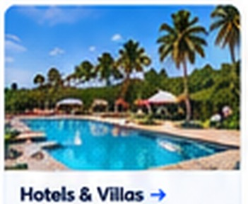
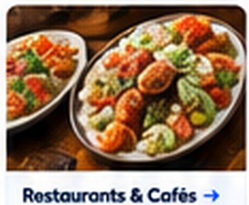
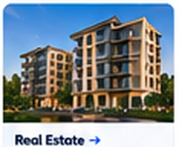
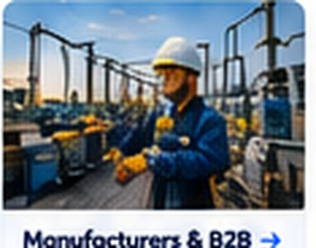
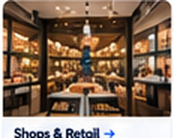
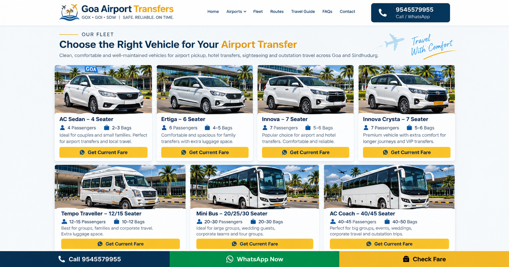
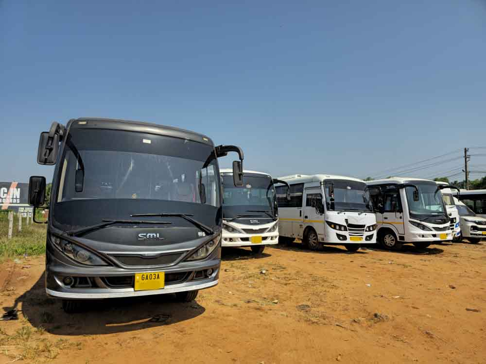
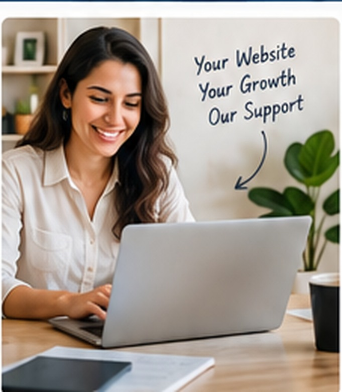

Professional Business Design
A clean, premium presentation matched to your industry, services and customers—not a generic template with your name added.
Modern, mobile-friendly and SEO-ready business websites for entrepreneurs, local businesses and growing companies in Goa and across India. Built to explain your business clearly and turn visitors into calls, WhatsApp conversations and qualified enquiries.
Clear message. Strong design. Real enquiries.
A restaurant, hotel, taxi operator and construction company should not have the same website. We structure the content, imagery and enquiry journey around the actual business.



Portfolio, packages, enquiry forms and event-focused presentation.
Build This WebsiteConsultants, accountants, legal and corporate service websites.
Build This WebsiteAC repair, electricians, plumbers, cleaning and local-service enquiries.
Build This Website
Capabilities, products, industries served and business enquiries.
Build This WebsiteServices, doctor profiles, location and appointment enquiries.
Build This Website
Professional layouts adapted to your brand, services and customer journey.
Responsive navigation, readable content and easy actions on phones and tablets.
Direct buttons and structured enquiry forms designed around your business.
Titles, headings, crawlability, sitemap, structured content and search-friendly architecture.
Use your actual fleet, projects, rooms, food, team or portfolio wherever possible.
Analytics and Google Search Console setup can be included in appropriate packages.
These categories reflect projects and business types we can develop. Actual client work is identified separately from demonstration concepts.

Fleet, airport routes, long-form content and WhatsApp fare enquiries.
Real fleet imagery, group transport, airport and outstation enquiries.

Fleet-led website for group travel, events and quotation enquiries.
Project portfolio, services, local content and quotation lead flow.
You do not need to buy an enterprise website when a focused one-page site solves today's problem. And a growing company should not be forced into a tiny starter template.
Launch with a professional identity, services, gallery, location, WhatsApp and contact actions.
Build a deeper architecture with multiple pages, portfolios, location/service landing pages, analytics, integrations and ongoing SEO.
We believe domain ownership, ongoing costs and project deliverables should be clear. We recommend keeping the business domain under the owner's control and defining what is included before development begins.
See How We WorkBusiness, customers, services, goals, locations, photographs and required actions.
Structure, visual design, mobile layouts, content and enquiry experience.
Test links and forms, review technical basics, connect domain and deploy.
Final pricing depends on the agreed scope, content, integrations and technical requirements.
For individuals and small local businesses.
For established local businesses.
For businesses targeting organic search growth.
We combine design, content structure, technical setup and conversion thinking so your website becomes a useful business asset—not just something that looks good for a few days.
We explain what is being built, what information we need and what the next step is.
Your visitors can reach you through WhatsApp, call buttons and purpose-built forms.

The form prepares a structured WhatsApp enquiry. Replace the WhatsApp number in assets/js/site.js with your final CreativeBay Websites sales number before launch.
A business website should do more than display a logo, phone number and a few photographs. For a local business in Goa, the website can become the place where a customer first understands what the company offers, where it operates, why it is credible and how to make an enquiry. CreativeBay Websites is built around that practical purpose. We design websites for small local operators, independent professionals, hospitality businesses and growing companies that need a professional digital presence without unnecessary complexity.
Goa has an unusually diverse business environment. A hotel in Candolim has very different website needs from an interior designer in Porvorim, a restaurant in Panjim, a builder in Margao or a transport company serving Mopa Airport. The content, calls to action, photographs and page structure should reflect the actual buying decision in each industry. We therefore avoid treating every customer as though the same generic template and the same five paragraphs will work.
For an individual starting a new venture, the first website may need to establish basic trust: business identity, services, contact information, location and an easy WhatsApp enquiry. For an established company, the requirement can include multiple service pages, project portfolios, lead qualification forms, analytics, search-oriented content and a structured plan for future growth. Our website packages are designed so both types of customer can start at an appropriate level.
Many small businesses depend almost entirely on referrals, WhatsApp, Instagram or a Google Business Profile. Those channels are useful, but a dedicated website gives the business a permanent place to explain its services in depth. A prospective customer can open one link and see the business story, service range, work photographs, location, frequently asked questions and contact options without scrolling through months of social posts.
For a taxi operator, this might mean showing the actual fleet, airport transfer areas and a fare-enquiry form. For a salon, it can mean services, work gallery, location and appointment enquiry. For an interior designer, the website should emphasize completed kitchens, wardrobes and rooms. For a restaurant, customers need menu information, opening details, location and a clear way to enquire. The website should match the real questions customers ask.
Budget also matters for a new business. A small company does not necessarily need a complicated application, large database or expensive custom system on day one. A carefully designed one-page website can be a strong starting point when it contains the right information and clear calls to action. As the business grows, additional pages and functions can be introduced rather than paying for features that have no immediate purpose.
Goa's hospitality sector competes heavily for attention. Hotels, villas, homestays, activity providers and tour companies are often represented on large third-party platforms, but their own website gives them space to present the brand on their terms. A hospitality website can showcase rooms, amenities, location, experiences, policies and direct enquiry options while directing visitors toward the action the business actually wants.
Good hospitality design is highly visual. Genuine photographs should be prioritized whenever the client has them. The copy should answer practical questions rather than simply repeat words such as luxury, best and unforgettable. Visitors want to understand what the property offers, who it suits, where it is located and how to contact the business. Clear information builds more confidence than exaggerated marketing language.
Tour and transport companies need a different structure. Their customers usually search by service, route, destination, vehicle or activity. A website can therefore organize airport transfers, sightseeing, fleet, packages and destination information into useful sections or separate pages. WhatsApp forms can prepare the trip details before the customer starts a conversation, saving time for both customer and operator.
A restaurant website should make basic information effortless to find. Customers commonly want to know the cuisine, menu, location, timings, atmosphere and how to reserve or enquire. Mobile usability is especially important because many people search for food while already travelling. Large text blocks and complicated navigation can get in the way of a simple decision.
Photography is central to restaurant design. We can work with the business's real food, interior and team images, optimize them for the web and arrange them in a visual layout. Where a business has no professional photography yet, we can design the site so stronger images can be added later without rebuilding the entire page.
For cafes, bakeries and specialty food businesses, the website can also feature signature products, catering, celebration orders, delivery information or WhatsApp ordering enquiries. The objective is not to duplicate every delivery platform. It is to create a branded home that customers can discover, remember and share.
Project-based businesses need proof of work. A builder or interior designer can describe experience in detail, but prospective customers often want to see completed projects before making contact. That is why we treat the portfolio as a central part of the website rather than an afterthought.
Interior design websites can organize kitchens, wardrobes, bedrooms, living rooms, false ceilings, commercial interiors and renovation work. Builders and contractors can present residential projects, commercial work, construction services and project stages. Each project can later grow into its own case-study page with photographs, scope and location where appropriate.
Lead forms should also fit the industry. Instead of asking only for a name and email address, a quotation form can ask for property type, location, approximate scope, project stage and preferred contact method. This helps the business understand the enquiry before the first call.
A larger company usually needs more structure than a starter website. Different audiences may need separate paths through the site. A B2B company might require capability pages, industries served, product information, certifications, company profile, enquiry forms and recruitment information. A property company may need individual project pages. A travel business may need many service and route pages.
For these projects we first think about information architecture: what pages exist, how they relate, what a visitor should do next and which content deserves its own search landing page. Design is then built around that structure. This prevents a common problem where a beautiful homepage is created first and the rest of the website becomes an unplanned collection of pages.
A company website should also be maintainable. We can discuss the appropriate technical approach according to the need for frequent updates, forms, integrations, content management or custom functionality. The cheapest technical option is not automatically the best for every organization, and a static site is not automatically appropriate for a business that needs staff to publish content daily.
Search engine optimization begins with making the website understandable. Page titles, headings, internal links, useful content, image descriptions, structured data and crawlable navigation all contribute to that foundation. We can also prepare sitemaps and help connect the website with Google Search Console so the owner can monitor how Google discovers the site.
Local SEO is not achieved by repeating a city name hundreds of times. A stronger approach is to describe the business accurately, explain its services, identify genuine service areas and create useful pages when different locations or services deserve different answers. A hotel website, for example, should not create fifty near-identical pages simply by changing the beach name. A transport business should not publish hundreds of route pages containing the same text.
We do not promise a number-one Google position because rankings depend on competition, website quality, relevance, reputation, links, search intent and many factors outside a web designer's control. What we can provide is a technically sound, content-rich foundation and an ongoing plan for improvement. For businesses where organic search is important, the Growth package can include deeper content planning and dedicated service or location pages.
CreativeBay Websites is designed to serve businesses across North Goa and South Goa. In Panjim, the potential client base includes professional services, restaurants, retail, hospitality and established companies. Porvorim and Mapusa include a broad mix of local services, offices, contractors and retail businesses. Calangute, Candolim, Baga, Anjuna and Vagator have strong hospitality, tourism, food and rental markets. Margao, Vasco, Ponda, Colva and Benaulim bring another mix of professional, local service, hospitality and commercial businesses.
A local website should reflect the market it serves without pretending every business serves every part of Goa. During content planning, we identify the real operating area and the searches relevant to that business. If a contractor only works in North Goa, the website should say so. If a hotel has one location, its pages should focus on that property rather than manufacturing artificial location coverage.
We can also work with businesses outside Goa. The design process, mobile standards, conversion principles and technical SEO foundation apply anywhere. Goa remains a priority market because of the number of independent businesses that can benefit from a stronger direct online presence.
For many local businesses, the first website visit happens on a phone. A tourist may search while travelling, a homeowner may open a contractor's link from WhatsApp, or a restaurant customer may check the menu while standing nearby. Mobile design is therefore part of the core website rather than a smaller desktop page squeezed onto a narrow screen.
Buttons should be easy to tap, text should remain readable, forms should not require excessive typing and important actions should appear at sensible points. We often use click-to-call and WhatsApp actions because they match the way many Indian customers already communicate with businesses.
Performance matters as well. Large unoptimized photographs and unnecessary scripts can make a site feel slow. We optimize the build according to the project, while recognizing that performance is influenced by hosting, third-party scripts, analytics, fonts and the media the customer chooses to publish.
The strongest business websites often use real photographs. Actual hotel rooms, completed interiors, vehicles, dishes, team members or projects can establish a level of credibility that generic stock imagery cannot. When clients provide good original photographs, we make those images a prominent part of the design.
Not every business has a complete photo library when it starts. In those cases, the website can launch with a combination of available brand assets and suitable supporting visuals, while keeping clear which imagery is representative. AI-generated imagery should not be passed off as a photograph of a client's actual property, staff, fleet or completed project.
Content follows the same principle. We can help structure and draft website copy, but factual claims about prices, certifications, years in business, facilities, warranties or results must come from accurate business information. A trustworthy website is more valuable than one filled with impressive but unverifiable claims.
A generic contact form often produces an incomplete message: “Please send price.” A better form asks for the information needed to understand the request. A hotel might ask for dates and guests. A taxi company can ask for pickup, destination and passengers. An interior designer can ask for property type and location. A website-design enquiry can ask for business type, website scope and approximate budget.
CreativeBay Websites can build forms that prepare a structured WhatsApp message. This keeps the familiar WhatsApp conversation while collecting useful details first. Email or other integrations can also be considered according to the project.
Forms should remain short enough that customers actually complete them. We choose fields based on business value rather than adding questions simply because a form builder allows them. Conversion design is often about removing friction as much as adding features.
The first stage is discovery. We collect the business name, contact details, logo, services, locations, photographs, preferred style and examples the owner likes. We also identify the main purpose of the website: enquiries, calls, reservations, portfolio presentation, direct sales or another objective.
Next comes structure and design. We decide which information belongs on the homepage and whether dedicated pages are needed. The visual design is then developed around the brand and industry. Once the core design is approved, content and imagery are refined, mobile layouts are checked and enquiry actions are tested.
Before launch we review important technical items such as page titles, metadata, indexability, forms, links, responsive behavior and sitemap configuration as applicable. Domain and deployment work is then completed according to the chosen hosting setup. Search Console and analytics can be connected when included in the package.
After launch, a business may choose to manage the site itself or use an ongoing care arrangement for content changes and technical updates. The exact maintenance model depends on the technology and scope used for that website.
Website ownership should be discussed clearly before work begins. The domain should normally be registered in an account controlled by the business owner. Hosting, premium software, third-party services and ongoing subscriptions should be identified so the client understands which costs continue after the initial project.
A website project fee pays for agreed design and development work. It does not mean that every future redesign, new page, new integration or unlimited content change is included forever. Maintenance plans can cover a defined amount of ongoing work, while larger additions can be quoted separately.
This transparency is particularly important for small businesses that have previously experienced unclear agency arrangements. Our aim is to define the deliverables, dependencies and ongoing services in straightforward language before a project starts.
Social platforms are valuable discovery and communication channels, but they are not a complete replacement for a business website. A social profile is designed around the platform's format. Important service information can become buried among posts, and the business has limited control over layout and presentation.
A website creates a focused destination for the brand. Advertising, social media, QR codes, email signatures and Google listings can all point to the same place. The visitor can then explore services, see evidence of work and choose a contact action.
The best approach is usually not website versus social media. It is website plus the channels that already work for the business. The website becomes the central asset while social media continues to generate attention and conversation.
An established business does not always need to start again with a new brand. Sometimes the real problem is an old website that is difficult to use on mobile, no longer reflects current services, contains outdated contact information or does not guide visitors toward an enquiry. A redesign begins by identifying what already has value. Existing domain authority, useful pages, photographs and content should not be discarded without a reason.
We can restructure the presentation, improve mobile layouts, simplify navigation and create clearer calls to action while preserving useful business information. Where search traffic already exists, redirects and URL planning should be considered carefully during a rebuild. The goal is not merely to make the website look newer; it is to make the site more useful to customers and better aligned with the way the business operates today.
One of the most effective ways to improve a website project is to plan the information before filling a template. We identify the main customer questions, the services that deserve prominence, the strongest proof available and the action visitors should take. This gives every section a purpose. It also makes future expansion easier because important services can later become dedicated pages without reorganizing the entire site.
For Goa businesses, local context can be valuable when it is genuine. A service company can explain the areas it actually covers, a hotel can describe its real location and nearby points of interest, and a transport operator can explain the airports and routes it serves. Useful local detail is more persuasive to customers and more sustainable for search than generic text created only to reach a keyword count.
CreativeBay Websites can work with businesses across Goa. The website strategy should always reflect the client's genuine operating area rather than adding locations solely for keywords.
The cost depends on scope. A focused one-page starter website can cost much less than a multi-page SEO or custom company project. Our indicative packages start at ₹4,999, while larger projects are quoted after understanding the requirements.
Yes. A new business can start with a focused website containing its brand, services, contact information, service area and enquiry system, then add pages and features as it grows.
Yes. A redesign can improve visual presentation, mobile usability, structure and conversion paths. We first review what should be retained, replaced or migrated.
Mobile responsiveness is part of our standard design approach. We test layouts so navigation, forms, text and calls to action remain usable on smaller screens.
Yes. We can add direct WhatsApp buttons or structured enquiry forms that prepare the customer's requirements before opening WhatsApp.
Yes, and we encourage it. Genuine photographs of your property, projects, products, food, fleet or team can make the site much more credible.
We can help draft and structure content based on accurate information supplied by the business. Claims such as pricing, certifications and guarantees must be verified by the client.
No responsible agency can guarantee a number-one organic ranking. We can build a strong technical and content foundation and provide ongoing SEO work where required.
Local SEO is the work of helping search engines understand what a business does and where it genuinely serves customers. It can involve website structure, useful local content, technical SEO, business listings and reputation signals.
Yes, Search Console setup can be included so the website owner can monitor indexing and organic search information.
A professional business should normally use its own domain. If you already have one, it can be connected. If not, we can guide the setup while keeping ownership clear.
Hosting depends on the project technology. We can deploy suitable static projects to modern hosting platforms or use another setup where the website requires a content management system or server-side features.
Yes. A well-structured starter site can be expanded with service, location, portfolio, blog or other pages as the business grows.
E-commerce is possible, but it should be scoped separately because payments, products, inventory, shipping, tax and customer-account requirements add complexity.
No. Goa is a priority local market, but CreativeBay Websites can work with businesses elsewhere in India as well.
Timing depends on scope and how quickly content, photographs and approvals are available. A small site can move much faster than a large multi-page company project.
We recommend that the business controls its domain account. Project ownership, source files, hosting and any licensed third-party components should be defined in the project agreement.
Yes. Location information and map links or embeds can be added when useful for the business.
Yes, an ongoing care arrangement can be offered for agreed content changes and technical support. Larger new features are normally scoped separately.
Usually the business name, logo if available, phone and WhatsApp details, address/service area, services, photographs, preferred style, existing domain information and the main goal for the website.
Whether you are launching a new Goa business or rebuilding an established company's online presence, start by telling us what you need.
Get a Free Website QuoteWe build professional, mobile-friendly websites for Goa businesses and growing companies across India. Your website is planned around one clear goal: help visitors understand your business, trust your company and contact you.
A clean, premium presentation matched to your industry, services and customers—not a generic template with your name added.
Layouts, buttons, enquiry forms and WhatsApp actions are designed to work comfortably on phones as well as desktops.
Logical headings, service content, metadata, schema-ready markup and fast static pages provide a strong technical foundation for search visibility.
Clear calls, WhatsApp buttons, quote requests and service-focused sections make the next step obvious to potential customers.
We can create industry-specific websites for hotels and villas, restaurants and cafés, travel companies, taxi and car rentals, bus and Tempo Traveller operators, interior designers, builders, real estate businesses, salons, event companies, professional services, home services, manufacturers, clinics, shops and other local businesses.
Ideal for a small local business that needs a professional online presence.
For businesses that need stronger presentation, enquiries and service detail.
For companies planning multiple services and long-term organic search growth.
For hotels, builders, real estate, travel companies and larger organisations requiring custom features or integrations.
Discuss ProjectShare your business type, location and what you want the website to achieve. We can then recommend a suitable starting package.